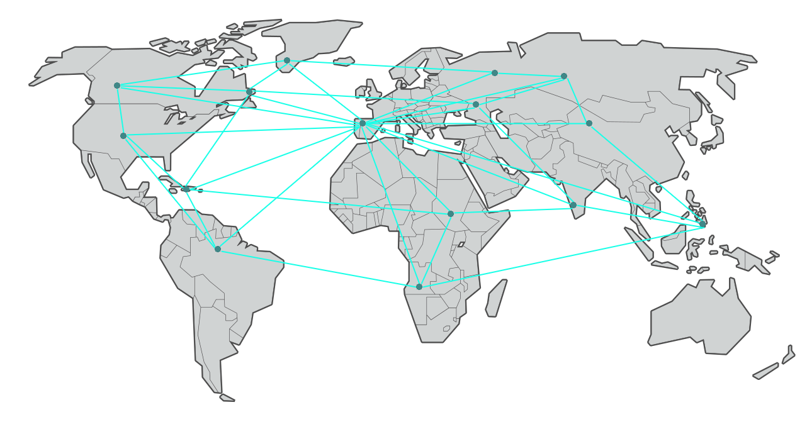

The piece I've decided to design is a world-map web using data gathered from traffic analytics of a selected website. Each city gathered from the data would correlate to points on the world-map, once all the data is plotted lines would connect each point together to form a web-like art piece. Each data point will be connected to the next closest one to help provide a web-like design and mapping. The resulting piece would represent the connection between people around the world viewing the same web address.
In order to create this the data values needed would be the geographical analytics of locations (cities) that have viewed the web address. That data would be used to create the points on the world-map to provide anchor points for the web-like structure.s
A rough sketch of how this data would look is provided below.

*note: If animation is a requirement then the web would adapt to cities that are no longer viewing the website and reconnect to current existing points.